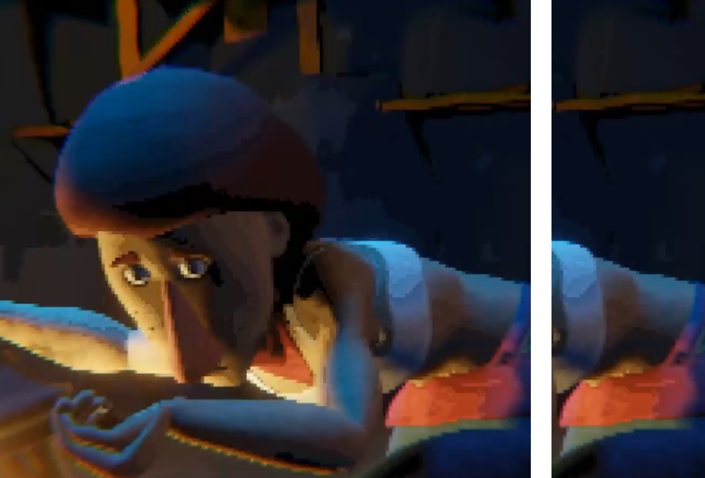
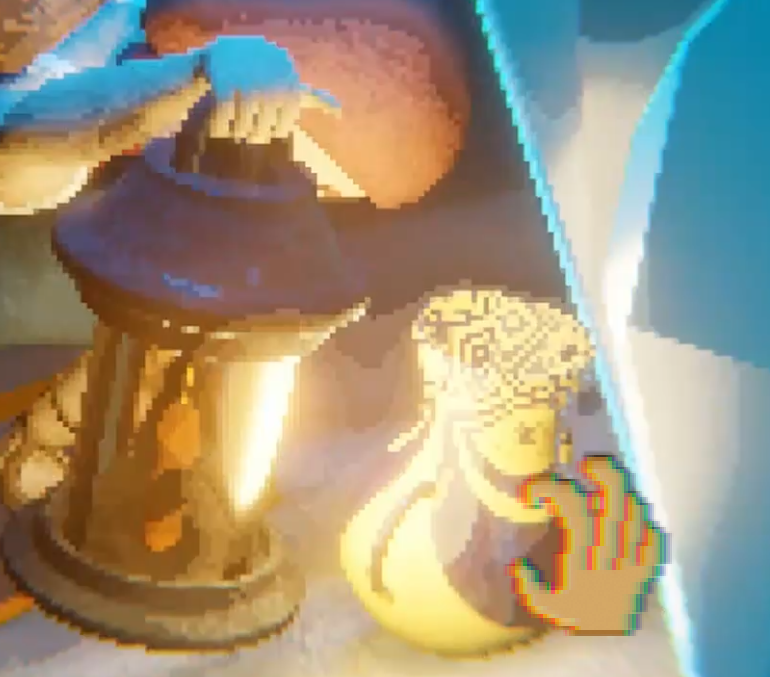

Das Thema Blackbox wird von verschiedenen Seiten Beleuchtet.
Systemtheorie:
Der Zeitstein fungiert als ein Input-Output System, mit dem Terri interagiert. Während Terri genau weiß, welchen Input er eingibt, bleibt ungewiss, wie der Stein mit Terris Input interagiert. Der unbekannte Output und die undurchsichtige Funktionsweise des Zeitsteins machen ihn zu einer Blackbox im klassischen Sinne.
Psychologie:
Es wird ein klarer Einblick in Terris Gedanken gewährt, wodurch auch seine Hoffnungen offengelegt werden. In der Psychologie wird das menschliche Gehirn oft als Blackbox bezeichnet, da seine Funktionsweise nicht vollständig durchschaubar ist. In meinem Projekt wird diese Blackbox in Form eines fiktionalen Charakters dargestellt.
Motivation:
Getrieben von seiner Gier interagiert Terri mit dem Zeitstein, ohne wirklich zu begreifen, was er eigentlich tut. Dennoch sorgt diese Gier dafür, dass Terri sich die profitabelsten Szenarien vorstellt. Die Gier fungiert dabei als Motor, der Terri antreibt.
Zeitsein
Systemtheorie

Gier
Antiebskraft
Gedanken
Psychologie
P&C
Programm
